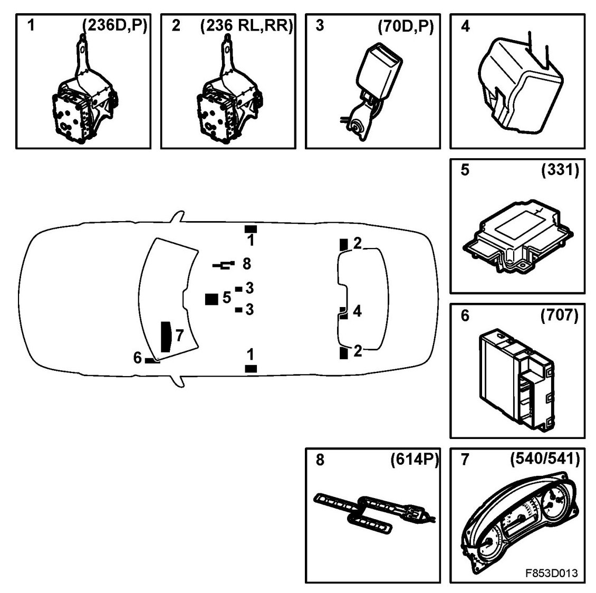

Seat Belt Systems: Locations
Main Components

1. Front seat-belt with belt tensioner (236D, 236P)
2. Rear seatbelt with belt pretensioner (outer seats, CV) (236RL, 236RR)
3. Front seat-belt buckle sensor (70D, 70P)
4. Rear seat-belt buckle
5. Airbag control module (331)
6. Control module, BCM (707)
7. Main instrument unit, MIU (540)/SID (541)
8. Sensor, loaded seat cushion, front passenger seat (614P)